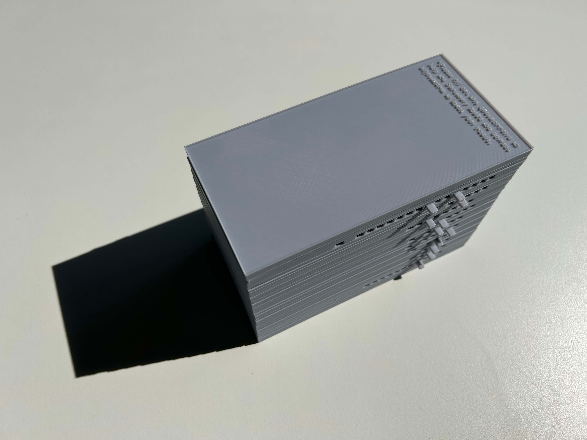
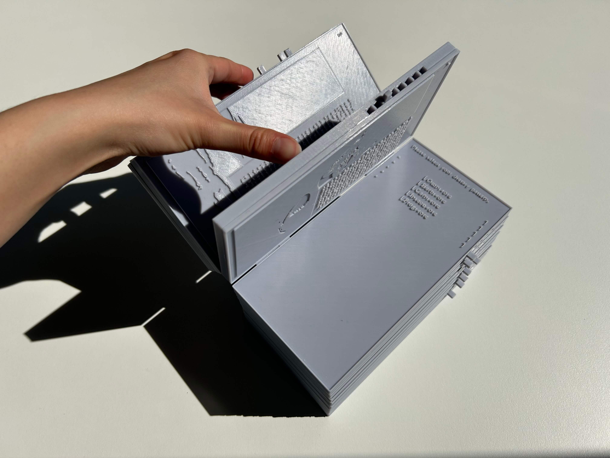
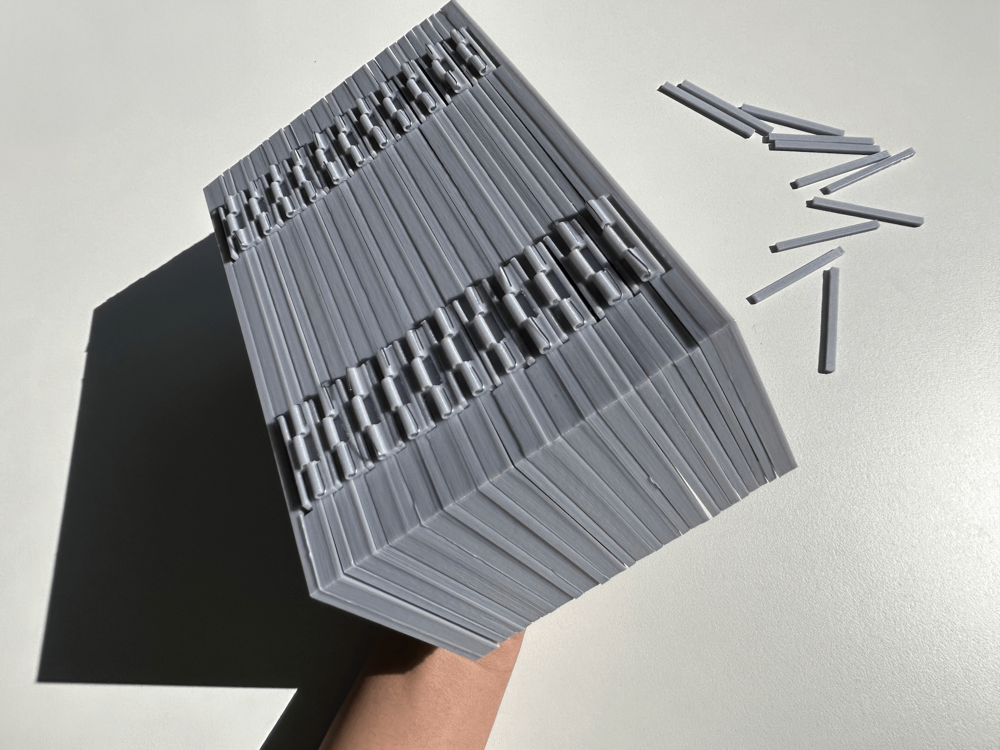
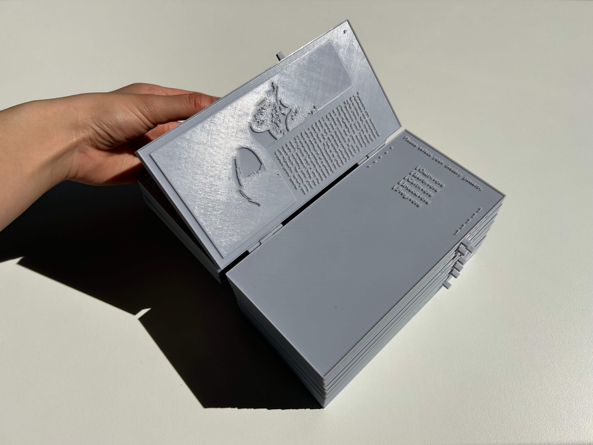
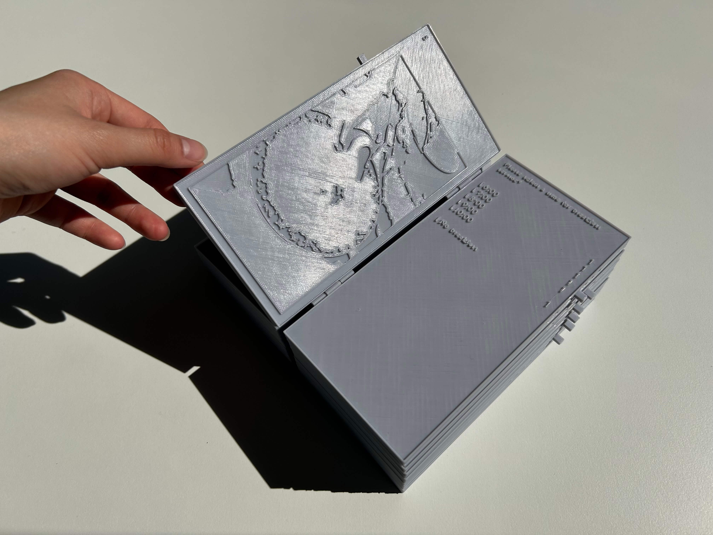
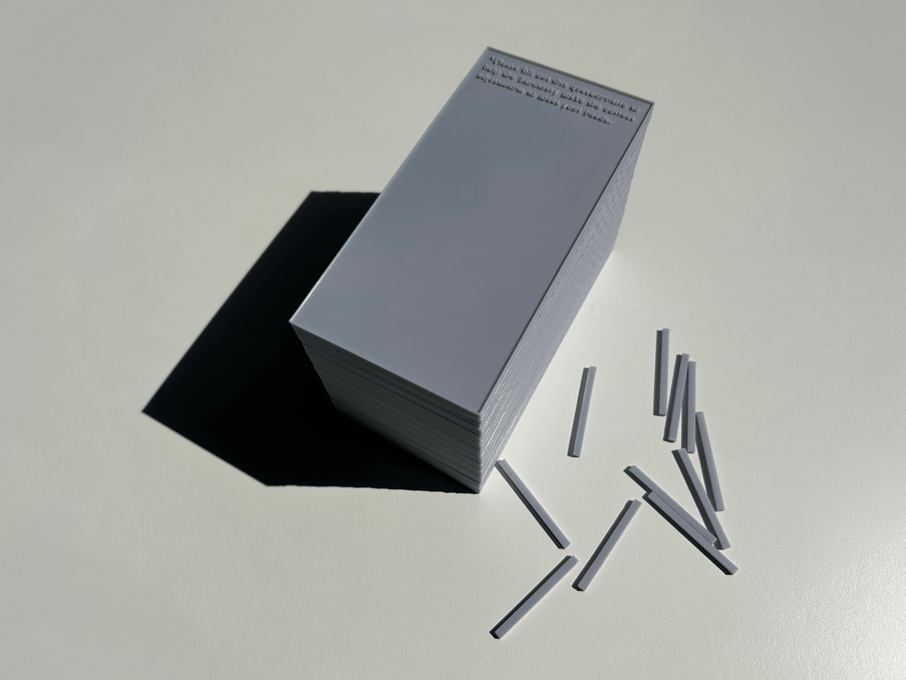
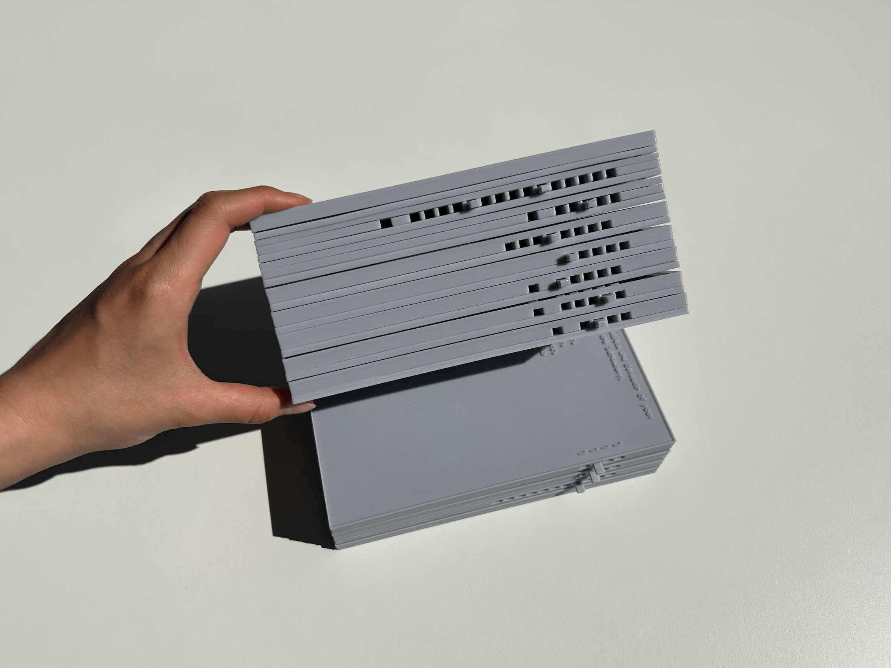
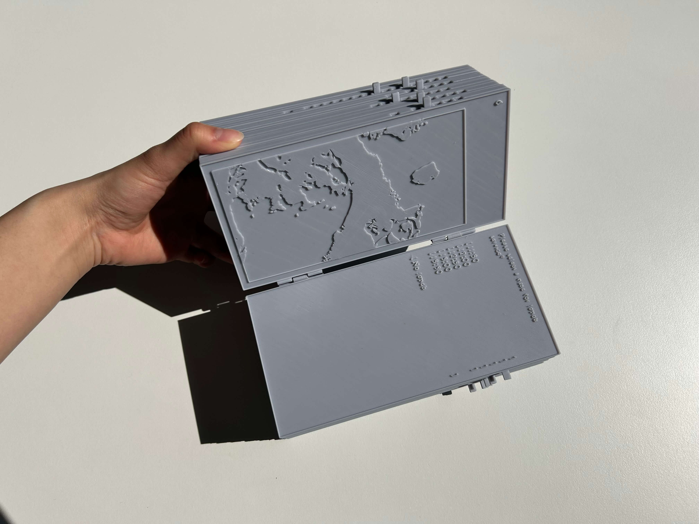
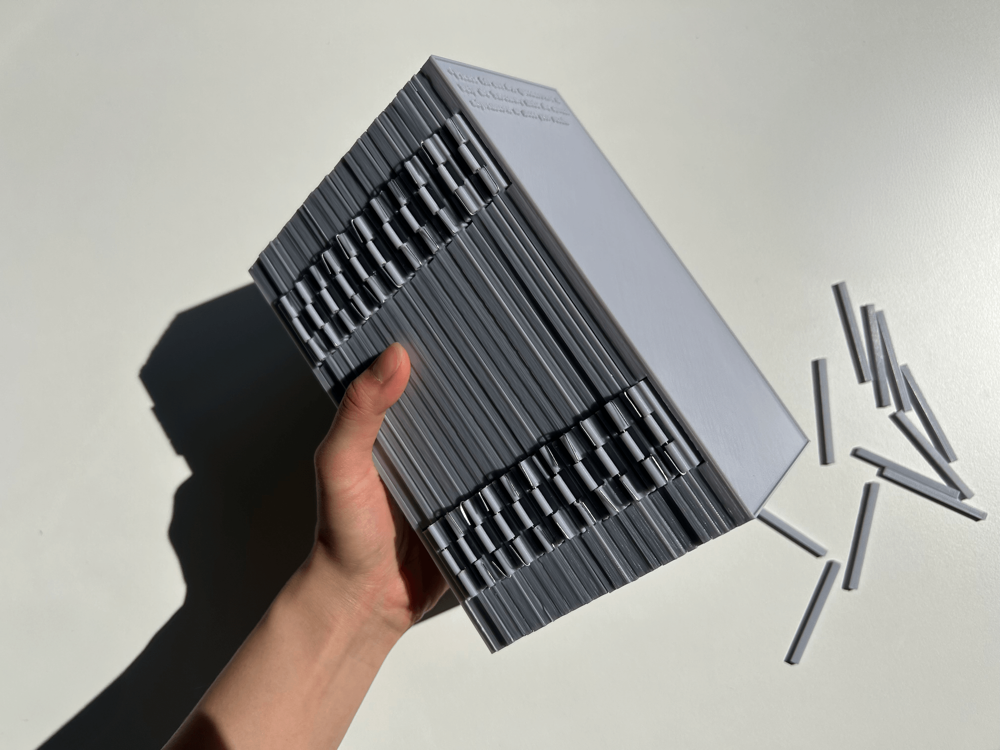

A questionnaire designed for a fictitious Sanctuary that offers refuge and temporary homesteads for lost travellers and wandering visitors seeking to recalibrate amidst life's chaos.
Questionnaire Object
22 pages | 90 × 180 mm | English
The Hague, Netherlands · April 2025